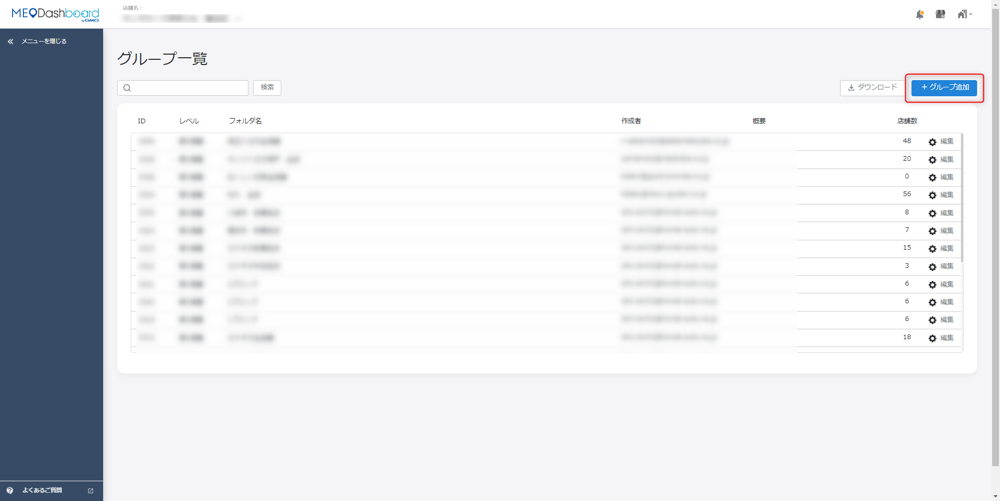
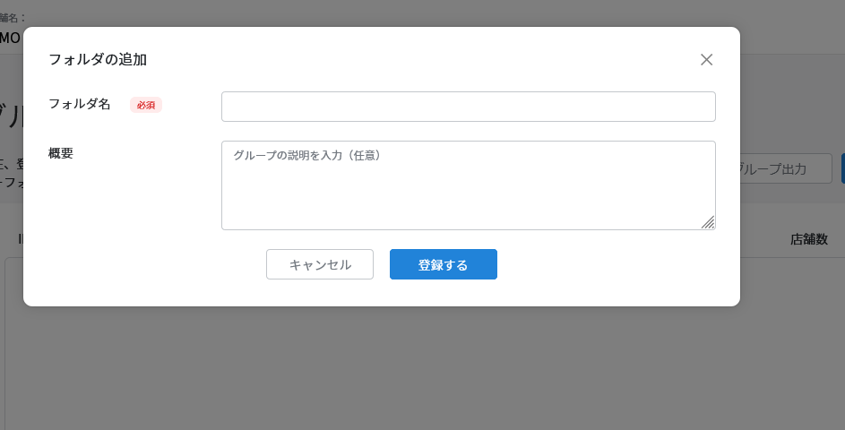
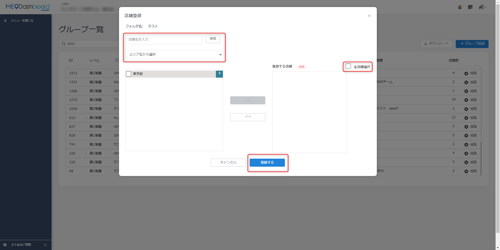
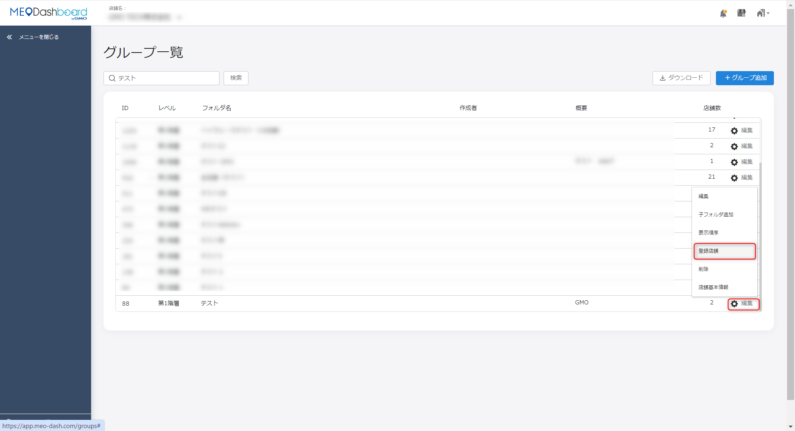
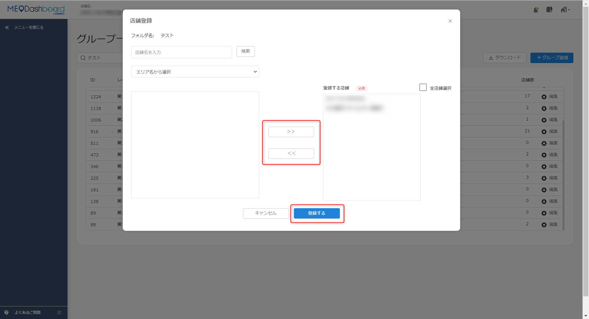
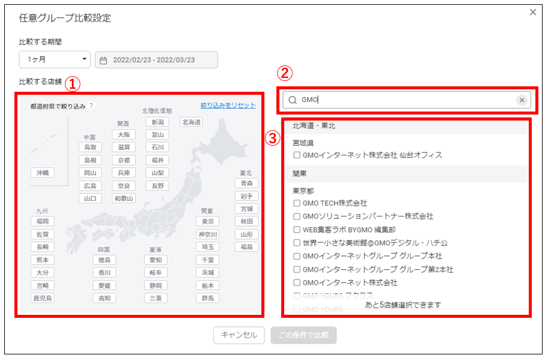
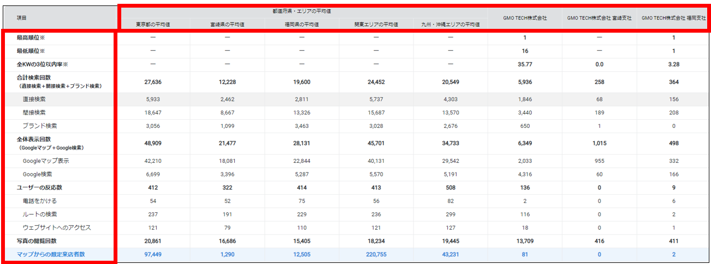
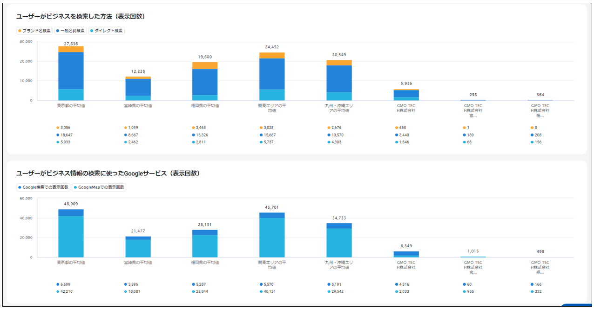
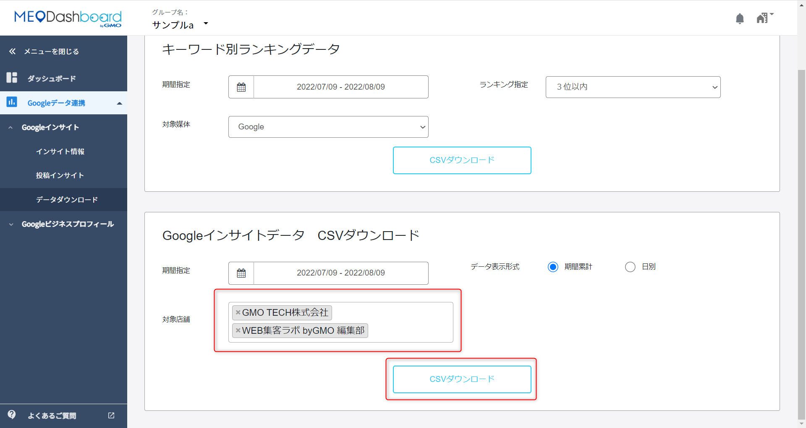

FoodLuck MEO 操作説明書 15
グループ管理
複数店舗のグループ作成、比較、店舗変更、データ確認を迷わず進めるための本部・多店舗向けマニュアル
| この資料の目的 グループ管理は、複数店舗をまとめて確認・比較するための機能です。飲食店の現場では、個店操作とは違い、本部担当者や複数店舗を管理する責任者が使う場面が多くなります。 |
|---|
| 操作前の注意 グループの登録店舗を変更すると、比較・集計・ダウンロード対象が変わります。店舗追加や削除、登録ボタンを押す操作は、対象店舗を確認してから行ってください。判断に迷う場合はFoodLuck側へ確認してください。 |
|---|
1. グループ管理でできること
グループ管理では、複数店舗をひとつのまとまりとして扱えます。エリア別、ブランド別、業態別などで分けておくと、インサイト比較や投稿状況の確認がしやすくなります。
| 機能 | できること | 使う場面 | 注意点 |
|---|---|---|---|
| グループ作成 | 複数店舗をまとめたフォルダを作る | エリア別、ブランド別に管理する | 同名フォルダは登録できない場合がある |
| 登録店舗変更 | グループに入れる店舗を追加・削除する | 新店追加、閉店、担当エリア変更時 | 対象店舗の確認が必要 |
| 任意グループ比較 | 選択店舗と都道府県・エリア平均を比較する | 店舗ごとの強弱を比べる | 比較対象は最大5店舗 |
| データダウンロード | 店舗別インサイトなどを出力する | 月次報告、会議資料作成 | 不要店舗は外してから出力 |
| 投稿一覧 | 投稿済み、投稿待ち、予約中、エラー投稿を確認する | 複数店舗の投稿状況確認 | 投稿内容の修正は慎重に行う |
| グループ数の考え方 グループ作成数に上限はありません。ただし、あまり多くの店舗をひとつにまとめるとインサイトなどが見づらくなります。FAQでは20店舗ごとなど、ある程度エリアを絞ったグループ作成が推奨されています。 |
|---|
2. グループを作成する
グループを作ると、複数店舗をまとめて管理できます。まずはエリアやブランドなど、現場で見たい単位を決めてから作成します。
- 画面右上のビルマークから「設定」>「グループ一覧」を開く。
- 「グループ追加」を押す。
- フォルダ名を入力する。
- 作成したグループの「編集」を押し、「登録店舗」を開く。
- グループに追加する店舗を、直接検索またはエリア名から選択する。
- 全店舗を入れる場合は「全店舗選択」を使う。
- 店舗選択が完了したら「登録する」を押す。
- グループ一覧で店舗数が表示されているか確認する。
FAQ画像: グループ一覧とグループ追加

- 右上の「グループ追加」から新しいグループを作成します。
- グループ作成後は「編集」>「登録店舗」から店舗を紐づけます。
FAQ画像: フォルダ名の入力

- フォルダ名は他社と重複する文言だと登録できない場合があります。
- 企業名、ブランド名、エリア名などを入れて分かりやすくします。
FAQ画像: 登録店舗の選択

- 直接検索またはエリア名から店舗を選択します。
- 最後に「登録する」を押すまで設定は完了しません。
3. グループ内の店舗を変更する
新店追加、閉店、担当エリア変更などがあった場合は、グループに登録している店舗を変更します。ここを間違えると、比較やダウンロード対象がずれるため、変更前後の店舗数を確認します。
- 画面右上のビルマークから「設定」>「グループ一覧」を開く。
- 変更したいグループの「編集」>「登録店舗」を開く。
- 追加する場合は、店舗名を直接検索するか、エリア名から店舗を選び「>>」で登録側へ移す。
- 削除する場合は、登録済み店舗から対象店舗を選び「<<」で外す。
- 対象店舗に間違いがないか確認する。
- 「登録する」を押して設定を完了する。
FAQ画像: 登録店舗変更の入口

- グループ一覧の「編集」から登録店舗を開きます。
- グループに入っている店舗は、ここから後で変更できます。
FAQ画像: 店舗の追加・削除

- 右側が登録する店舗、左側が選択候補です。
- 追加・削除後は必ず登録ボタンを押して完了します。
| 変更後の確認 グループ変更後は、グループ一覧の店舗数、任意グループ比較の対象店舗、データダウンロード対象を確認してください。月次レポート作成前に変更すると、前月との比較対象が変わる場合があります。 |
|---|
4. 任意グループ比較を見る
任意グループ比較では、選択した店舗の数値を都道府県やエリア平均と比較できます。本部や複数店舗管理者が、どの店舗が強いか、どこに改善余地があるかを見るための画面です。
- 上部メニューから「グループ管理」>「任意グループ比較」を開く。
- 左上の「比較する期間」で確認したい期間を選ぶ。
- 比較対象店舗を最大5店舗まで選ぶ。
- 店舗は、日本地図から都道府県を選ぶ、フリーワード検索する、店舗リストから選ぶ、の3通りで選択できる。
- 対象店舗にチェックを入れ、「この条件で比較」を押す。
- 表示された表やグラフを見て、店舗間やエリア平均との違いを確認する。
FAQ画像: 任意グループ比較の条件選択

- 比較期間と対象店舗を選びます。
- 比較対象店舗は最大5店舗までです。
FAQ画像: 任意グループ比較の表

- 都道府県・エリア平均と店舗の数値を並べて確認できます。
- 低い店舗を責めるためではなく、改善の優先順位を決める材料として使います。
FAQ画像: 任意グループ比較のグラフ

- グラフで見ると、店舗間の差や伸びが把握しやすくなります。
- 数字が大きく動いた時は、投稿、写真、クチコミ、近隣イベントなどと合わせて確認します。
5. グループでデータや投稿状況を確認する
5-1. 店舗別インサイトデータをダウンロードする
- 左ナビから「Googleデータ連携」>「Googleインサイト」>「データダウンロード」を開く。
- 出力対象の店舗を確認する。
- ダウンロード不要の店舗がある場合は、店舗名の「×」を押して対象から外す。
- 必要な条件でデータを出力する。
FAQ画像: 店舗別インサイトデータダウンロード

- 複数店舗の数字を出す前に、対象店舗が正しいか確認します。
- 会議資料や月次報告では、不要店舗を外してから出力すると見やすくなります。
5-2. 投稿一覧を見る
グループ管理側でも、Googleデータ連携 > Googleビジネスプロフィール > 投稿 の順に進むと投稿一覧を確認できます。投稿済みだけでなく、投稿待ち、予約中、エラー投稿も確認できます。
- 投稿済み: すでに公開済みの投稿です。
- 投稿待ち・予約中: これから公開される投稿です。日時や対象店舗を確認します。
- エラー投稿: 画像、本文、URL、媒体連携などに問題がある可能性があります。
- 複数店舗で同じ内容を投稿する時は、店舗名、日付、クーポン条件、リンク先が店舗ごとに合っているか確認します。
6. グループ管理でクーポンを扱う時の注意
FAQでは、グループ管理画面からクーポンを作成することはできないと説明されています。クーポンは来店測定をするための機能なので、各店舗ごとに作成・投稿する運用が推奨されています。
| 項目 | できること・できないこと | 飲食店での運用 |
|---|---|---|
| グループからクーポン作成 | できない | 店舗ごとにクーポンを作成する |
| クーポンURLの一括作成 | 複数店舗で同じURL登録はできない | 店舗ごとのURLを使う |
| クーポンコード | クーポン管理URLとは別 | 混同しないように管理する |
| 来店測定 | 店舗単位で見る前提 | 配布店舗と利用店舗を揃える |
| 現場向けの判断 全店共通キャンペーンでも、FoodLuck MEO上のクーポンは各店舗ごとに作成するのが基本です。本部で一括告知する場合も、店舗ごとのURLや投稿内容が混ざらないように確認してください。 |
|---|
7. 多店舗運用の月次チェックリスト
□ グループ名が、エリア・ブランド・業態など現場で分かる名前になっている
□ 閉店・新店・担当変更があった店舗をグループに反映した
□ グループごとの店舗数が多すぎず、比較しやすい単位になっている
□ 任意グループ比較で、伸びている店舗と落ちている店舗を確認した
□ 店舗別インサイトデータの出力対象が正しい
□ 投稿一覧で、投稿待ち・予約中・エラー投稿を確認した
□ クーポンはグループ一括ではなく、店舗ごとに作成・投稿している
□ グループ変更後に、月次レポートの比較対象が変わっていないか確認した
| 現場に伝える時のポイント グループ管理は、本部や複数店舗管理者が全体像を見るための機能です。店舗現場には、個店でやるべき投稿、写真、クチコミ返信、メニュー更新を伝え、本部側ではグループ比較で改善の優先順位を決めると運用しやすくなります。 |
|---|
8. この資料に反映したFAQ記事
| No. | FAQ記事 | 本文での反映先 |
|---|---|---|
| 1 | 任意グループ比較について | 4. 任意グループ比較 |
| 2 | グループの作成方法 | 2-3. グループ作成・店舗変更 |
| 3 | グループに登録した店舗を変更する方法 | 2-3. グループ作成・店舗変更 |
| 4 | 【グループ】グルーピングした店舗の変更方法 | 2-3. グループ作成・店舗変更 |
| 5 | グループ作成の上限数 | 2-3. グループ作成・店舗変更 |
| 6 | 【グループ】グループ管理を利用した、クーポンの作成について | 6. クーポン注意 |
| 7 | クーポン管理URLの一括作成について | 5-6. データ確認・クーポン注意 |
| 8 | 【グループ】店舗別インサイトデータダウンロード方法 | 5-6. データ確認・クーポン注意 |
| 9 | 投稿一覧 | 5. 投稿一覧 |